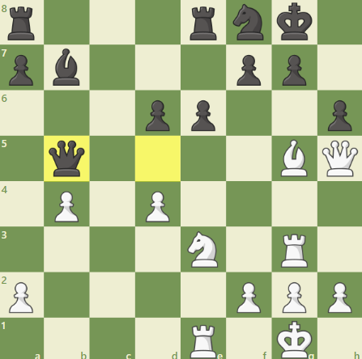

Đòn cối xay là gì?
Đòn cối xay (hay còn gọi là "windmill" trong tiếng Anh) là một chiến thuật hiếm nhưng cực kỳ hiệu quả và đẹp mắt trong cờ vua.
Đây là tình huống mà hai quân phối hợp (thường là Xe và Tượng) để tấn công liên tục vào các mục tiêu của đối phương, buộc đối thủ rơi vào thế bất lực, không thể ngăn cản thiệt hại.
Ví dụ về đòn cối xay
Carlos Torre Repetto vs. Emanuel Lasker
Ở thế cờ này, sau khi hậu đen chạy từ d5 sang b5, đen đang đe dọa sẽ bắt vào con tượng ở g5 của trắng. Tuy nhiên, trắng thản nhiên nhảy tượng lên f6, phế luôn hậu, mở đường cho đòn cối xay.
Do nếu không ăn thì đen có thể sẽ bị chiếu hết nên trường hợp tốt nhất cho đen lúc này là ăn hậu đen vào quân hậu trắng ở h5
Ngay lập tức, trắng phi xe xuống g7, đen không còn nước nào khác phải chạy vua sang h8
Trắng tiếp tục ăn tốt f7, chiếu mở khiến vua đen không còn nước nào khác phải chạy về ô g8
Tương tự trắng tiếp tục sang g7 chiếu và chạy sang ăn tượng ở b7, tốt ở a7 và hậu đen ở h5, tạo ra khoảng cách về quân số.
Chiến lược tạo đòn cối xay
- Xây dựng vị trí Xe và Tượng: Đưa Xe và Tượng vào các đường tấn công chiến lược, kiểm soát khu vực quanh Vua đối thủ.
- Đe dọa chiếu Vua liên tục: Tạo áp lực bằng cách chiếu Vua để đối thủ phải di chuyển quân, tạo khoảng trống cho đòn cối xay.
- Dụ quân bảo vệ rời khỏi vị trí: Sử dụng các chiến thuật như tấn công tốt hoặc chiếu để ép đối thủ điều quân, làm giảm sự bảo vệ cho Vua.
Phòng ngừa đòn cối xay
- Đảm bảo Vua có khoảng trống: Luôn để Vua có ít nhất một hoặc hai ô thoát hiểm, tránh bị ép góc hoặc bị "cột" bởi Xe và Tượng.
- Không để quân giá trị cao ở gần Vua: Tránh đặt Hậu, Xe hoặc Tượng gần Vua trong tình huống mà đối thủ có thể thực hiện đòn cối xay.
- DPhá vỡ phối hợp Xe và Tượng của đối thủ: Nếu đối thủ đang chuẩn bị thực hiện đòn cối xay, hãy tìm cách đổi quân để làm giảm sự phối hợp giữa Xe và Tượng.